アカウント登録
Mercedes-AMG公式サイトにログインします。Mercedes me IDをお持ちの場合は、同じ情報を使えます。
AMG PRIVATE LOUNGE TOKYO
AMGオーナーのための公式コミュニティへの参加方法を、日本語でわかりやすくご案内します。
JOIN TOKYO HUB
Mercedes-AMG公式サイトにログインします。Mercedes me IDをお持ちの場合は、同じ情報を使えます。
AMGオーナー専用ページを有効化するため、車両のVIN番号を登録します。
東京ハブページで「Join group」をクリックすると、イベント情報にアクセスしやすくなります。
英語サイトですが、手順はシンプルです。日本語ガイドとInstagram動画を参考に進めてください。
ABOUT TOKYO HUB
AMG Private Lounge 東京ハブは、Mercedes-AMG GermanyのPrivate Loungeネットワークに登録された東京の公式ハブです。
2025年8月に発足し、現在は130名以上のメンバーが参加しています。これまで20件以上のイベントを企画・開催し、ドライビング体験や交流イベントを通じて、AMGオーナー同士のつながりを育てています。
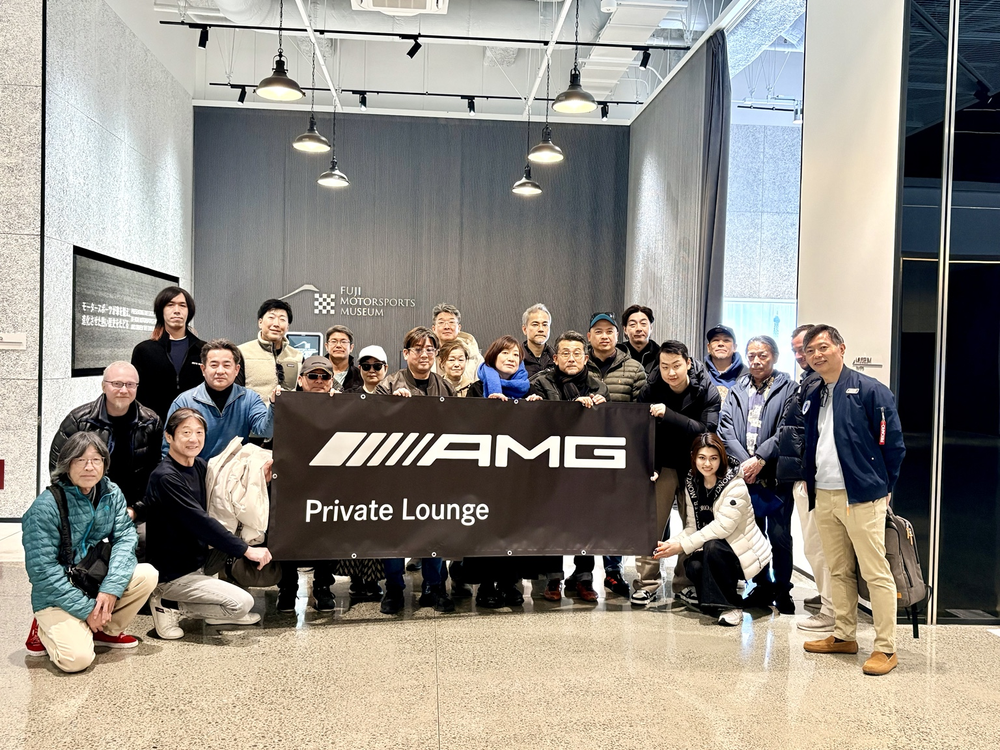
Mercedes-AMG Germanyが運営するPrivate Loungeのローカルハブです。
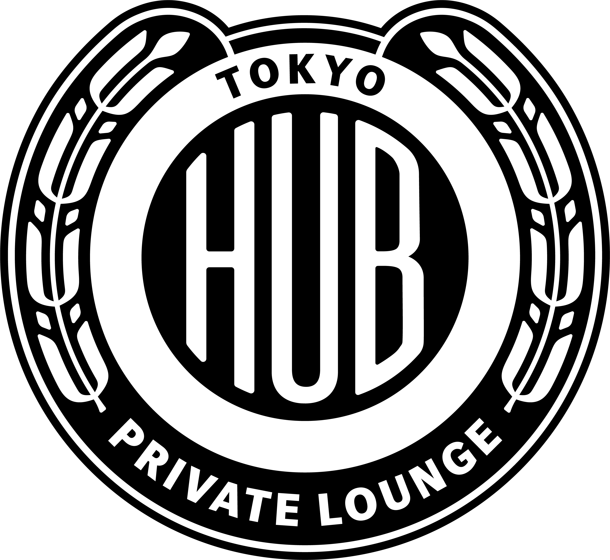
Mercedes-AMG Germanyより東京ハブへ提供された公式エンブレムです。運営はメンバー有志が行い、イベントは基本的に実費ベースです。
安全で記憶に残る、AMGらしい体験を大切にしています。
HUB MANAGER
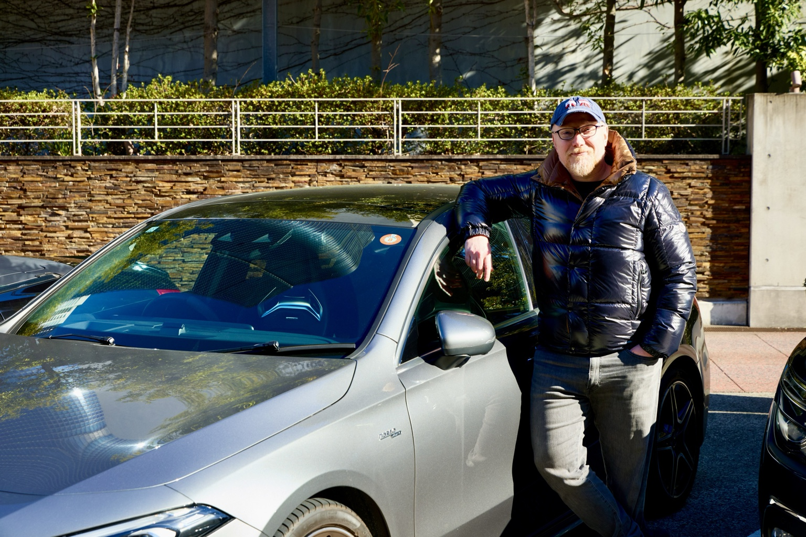
東京ハブはボランティアベースで運営されています。AMGという共通の情熱を持つメンバーが、自然につながり、長く続くコミュニティになることを目指しています。
「クルマを楽しむ」だけでなく、人と人のつながりを大切にしています。
お問い合わせはこちらMEMBER SPOTLIGHT

2026年7月
機械メーカーでエンジニアとして培った経験と、機械・ドイツ・そして“走る楽しさ”への情熱から、自然な流れでAMGオーナーになりました。
Private Loungeで出会えた仲間との時間を何より大切にし、現在はTokyo Hubの運営サポートにも積極的に参加しています。
これまでのMember Spotlightを見るUPCOMING EVENTS
PREVIOUS EVENTS
AMGブランドスニーカーのローンチイベントに参加し、メンバー同士で交流しました。
秋の日光・中禅寺湖エリアを巡るツーリングを開催しました。
富士スピードウェイでの走行体験に加え、富士モータースポーツミュージアムを訪問しました。
Mercedes-Benz浦安にて、朝のカジュアルな交流イベントを開催しました。
三浦半島への春のドライブを開催し、海沿いの景色とランチを楽しみました。
Tokyo Hub初のカート大会を開催し、メンバー同士で気軽にモータースポーツを楽しみました。
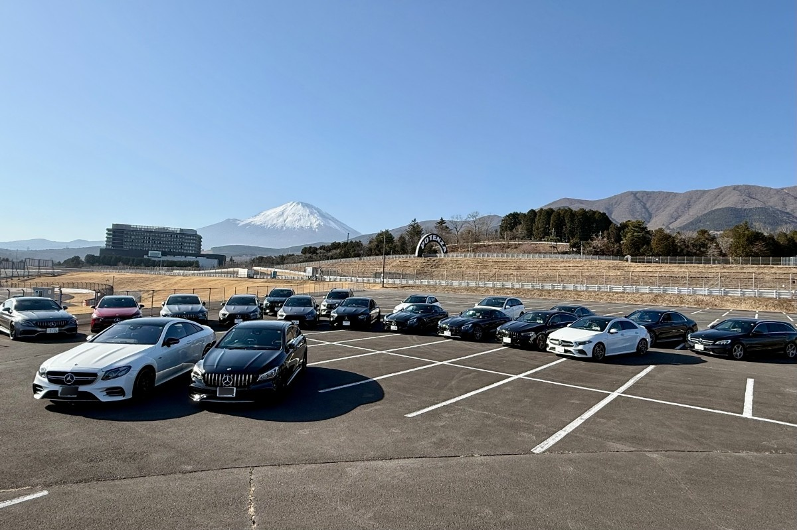
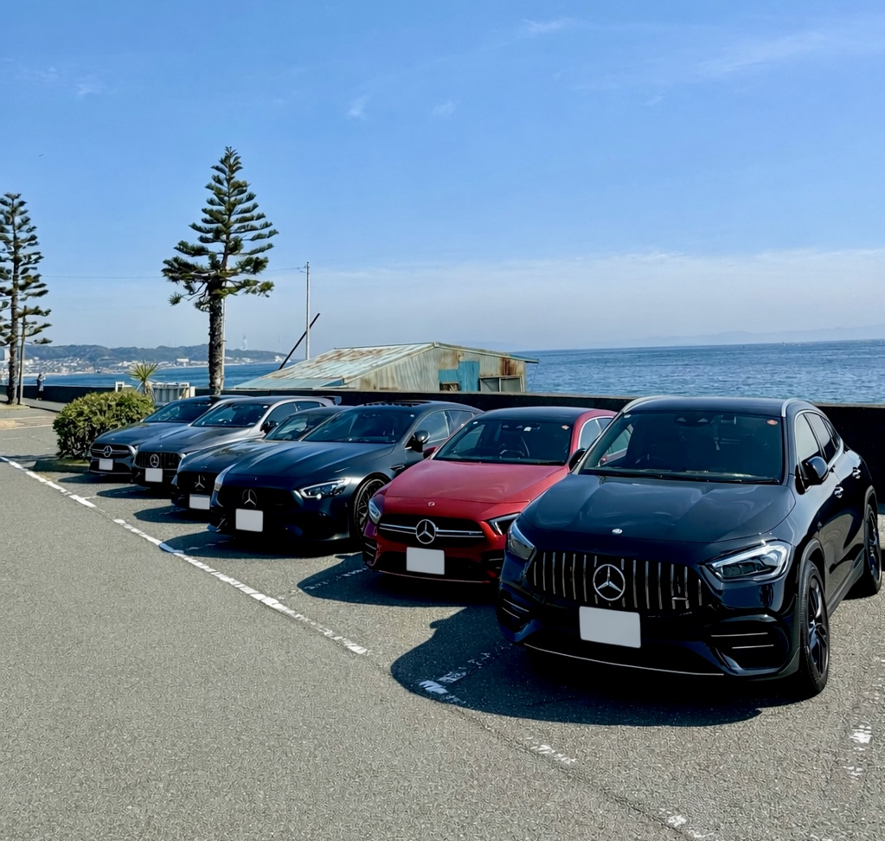
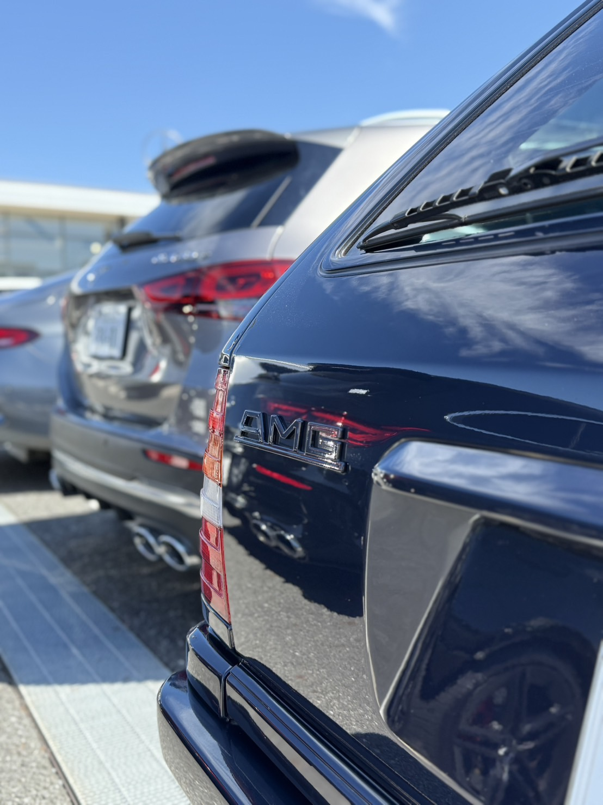
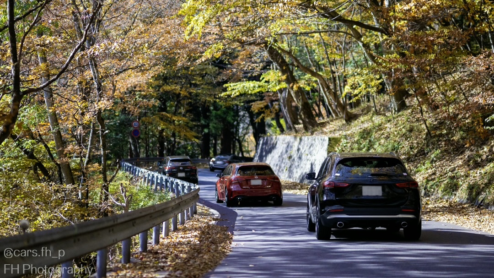
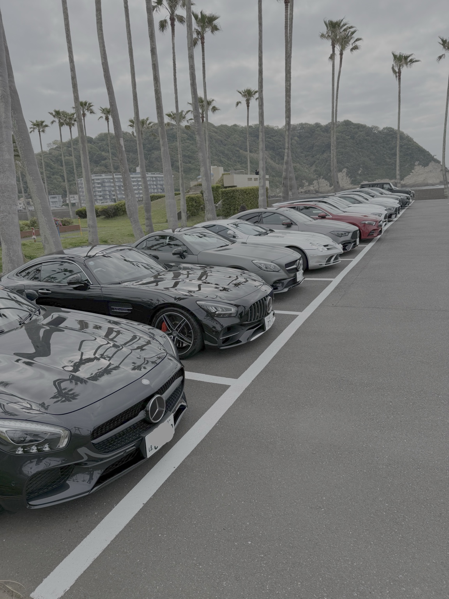

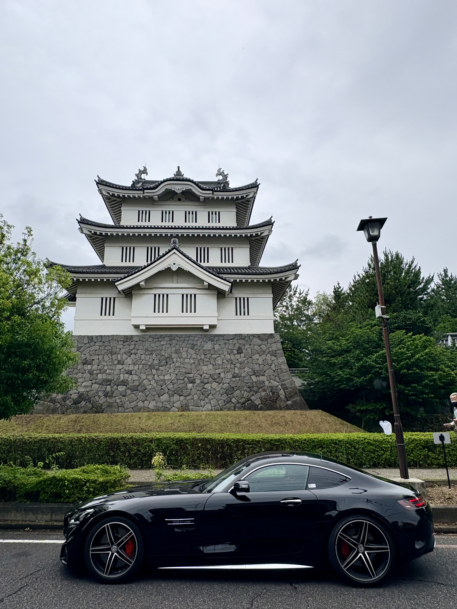
PARTNERS
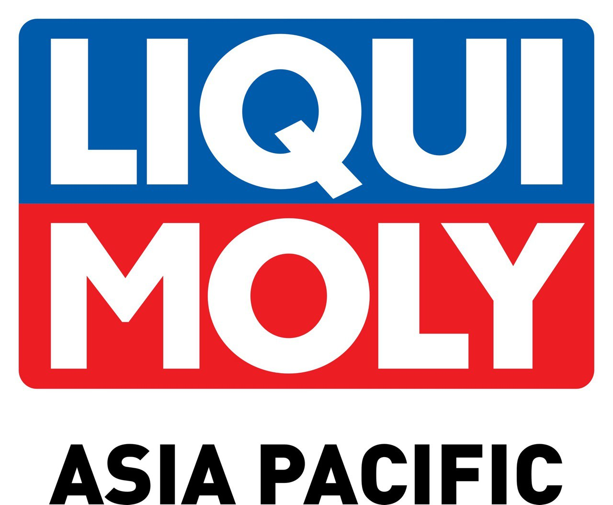
テクニカルパートナーとして、東京ハブの活動をサポートいただいています。
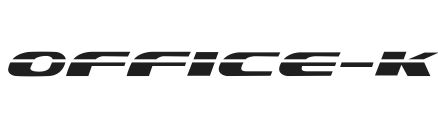
独立系Mercedes-Benz / AMG専門工場として、東京ハブメンバーをサポートいただいています。